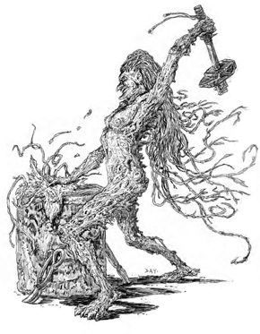

El Umbral de Arcadia
Eliseo ap Liam: 2003 - 2008
Eliseo ap Liam: 2003 - 2008
La onda en el agua de hoy es la tormenta de mañana.

Al contrario de la creencia extendida, los inanimae no son espíritus elementales, sino más bien espíritus feéricos que adoptan la forma de fenómenos naturales. Los inanimae se clasifican en cinco categorías: aire, agua, tierra, fuego y madera. Dentro de esas categorías existe, además, una miríada de tipos específicos. El aspecto del aire incluye el viento, el rayo y el humo. La tierra abarca la arena, la roca y el lodo, entre otros. Los inanimae de madera son probablemente los más variados, ya que cualquier planta podría teóricamente dar vida a uno de sus miembros. El agua y el fuego tienen menos variantes, aunque ellos insisten en que las diferencia entre los feéricos de agua de mar y los de agua de lago son considerables. Todos los inanimae están extremadamente definidos por su elemento afín, por ejemplo, los de roca tienden a ser torpes y lentos mentalmente, pero a poseer gran fuerza y resistencia, mientras que los de rayo actúan con gran fuerza cuando consiguen ordenar sus mentes. Cada aspecto de un elemento tiene sus rasgos loables y aterradores, y los inanimae los heredan todos.Estos seres pueden reproducirse de dos modos, siendo uno de ellos un secreto oculto a casi todos. Generalmente, los inanimae surgen a la vida de forma espontánea. Esto ocurre típicamente cuando las propias fuerzas de la naturaleza, como los terremotos, las tormentas eléctricas o los fuegos incontrolados se activan, especialmente en zonas saturadas de magia. El resto de las hadas no son conscientes, en su mayoría, de que los inanimae nazcan de ningún otro modo.
Y es que la otra forma de reproducción resulta la mayor de sus vergüenzas y de sus secretos, pues la consideran una verdadera debilidad. Si dos inanimae del mismo aspecto elemental se unen, el puede dar lugar a un corto embarazo (de sólo unos días de duración) y al nacimiento de un nuevo ser. Si un inanimae declarase que tiene padres, el resto de los de su origen probablemente le rechazarían. Muchos inanimae nacidos se convierten en hadas del Solsticio por pura amargura.
Uno de los primeros actos que llevan a cabo después de surgir (o nacer) es dar forma a su aspecto humano, que normalmente está basado en el del primer mortal que ven, o simplemente en la idea que tienen del posible aspecto de los mortales. La forma humana de un inanimae tiene el mismo aspecto cada vez que la adopta, siendo algo que muchas hadas cuestionan. Es esta consistencia sin embargo, lo que permite a los volubles inanimae usar el Tejido (y por ello los cantrips) ya que un inanimae sin una forma humana consistente estaría a merced de las Nieblas y sería incapaz de enfocar su poder o tal vez si quiera podría recordar los hechos que le hayan acaecido de un momento al siguiente. No obstante, cuando se encuentra en forma humana, una parte del aspecto elemental del inanimae persiste.
Durante la Acogida, los inanimae adquieren conocimientos sobre su patrimonio y las costumbres de la Corte a la que van a servir. Los jóvenes utilizan este tiempo para dar rienda suelta a su caos interno, mientras buscan su verdadero lugar en el mundo. Los ancianos justifican el hecho diciendo que una vez que los jóvenes saben lo que quieren y quiénes son pueden llevar a cabo sus obligaciones para con la Corte sin interrupciones por parte de sus impulsivos deseos. Aunque los ancianos generalmente están en lo cierto, algunos inanimae nunca llegan adaptarse del todo a este modo de pensar, mientras que otros lo consiguen mucho antes de su Bautizo.
Los inanimae, como los changelings, tuvieron que luchar por el privilegio de tener sus propios dominios y gobernar sobre otras hadas, pero la lucha ha terminado hace tanto tiempo que muchos no son ni siquiera conscientes de que alguna vez tuviera lugar. Los reinos sostenidos por inanimae, no suelen tener demasiadas estructuras construidas (a no ser que también acojan a un buen número de primonatos o changelings), y la mayor parte de sus sprites tienden a adoptar formas elementales en lugar de animales o humanoides. No suelen tener sirvientes humanos, ya que, a su entender, estos han de ser alimentados, vestidos y acogidos, mientras que un inanimae simplemente puede descomponerse en sus partes elementales cuando sienta que necesita reponerse, absorbiendo su sustento del propio mundo que le rodea.
No queremos decir, sin embargo, que los inanimae sean poco civilizados por naturaleza. Un inanimae del viento puede representar la canción o la música (que son conceptos, ambos, muy civilizados) tan fácilmente como el viento sobre las praderas o un temporal de tormenta. Uno de tierra puede surgir de las rocas y ser extraído para construir una catedral, o uno de fuego puede "nacer" de las hogueras de un campamento militar. Estos entes comprenden la sociedad y participan de ella de forma entusiasta, incluyendo la amenazadora Guerra.
Los inanimae no están atados a ningún lugar específico que contenga el elemento del cual surgieron. Sus habilidades inherentes para reconstruir su semblante les hacen valiosos mensajeros y espías. Esto es especialmente cierto para los inanimae del mismo aspecto natural, que se comprenden entre sí y pueden identificarse con las necesidades y debilidades básicas del otro, independientemente de la Corte. Aunque no son tan buenos como los changelings a la hora de comprender a los humanos y sus costumbres, son muchos mejores, en este aspecto que los primonatos. Esto se debe a que ellos, como los humanos, son criaturas inherentemente del mundo físico, mientras que los primonatos son inherentemente mágicos.
Semblante: El semblante de un inanimae se debe más a su Origen que a su Corte (lo cual no ocurre con el resto de las hadas). Estos entes lucen su patrimonio elemental de forma evidente. Un inanimae de agua puede tener la apariencia, en su semblante feérico, de estar hecho de agua marina, o puede tener la piel del color del océano y el pelo flotando con una textura como la del agua de mar. Dependiendo de la Corte a la que pertenezca, su tacto puede ser una caricia tan ría como las aguas del norte (Invierno), puede poseer la sensual calidez del Mediterráneo (Primavera), o incluso puede ser tan cálido como las aguas de un manantial termal (Verano). Un inanimae de fuego no tiene necesariamente por qué tener el aspecto de una columna de llamas, pero se le notará claramente caliente al tacto y probablemente brillará con el tremolar de las llamas (aunque tenga suficiente control sobre su forma como para evitar quemar todo lo que toque).
Los inanimae, en su forma humana, son superficialmente indistinguibles de los humanos normales; pero todos son seres del mundo natural más que criaturas de carne. En su apariencia mortal, un inanimae de agua será muy probablemente grácil y ágil, pero por lo demás será auténticamente humano. El aspecto, sin embargo, puede ser engañoso (si se le cortase, sangraría agua marina). Del mismo modo, un inanimae de fuego sería mentalmente muy ágil y presuntuoso, y, de cuando en cuando, echaría una nubecilla de humo acre.
Derecho de Nacimiento: Los inanimae poseen habilidades increíblemente poderosas a la hora de formar su semblante. Mientras que uno de ellos permanezca cerca de su elemento elegido (en su sentido más amplio, un inanimae de rayo podrá realizar esta proeza en cualquier lugar donde exista el aire), será capaz de descomponerse y reconstruir su cuerpo ya sea en su semblante feérico o en su aspecto humano. Esta reconstrucción le costará ocho horas, pero curará todo tipo de daño (incluso el agravado) que hubiera sufrido el cuerpo previo. El jugador habrá de tirar Tejido (a una dificulta de 6) para llevar a cabo esta reconstrucción; y si la tirada falla el personaje quedará atrapado durante ocho horas en la forma que tenga en ese momento. Sin embargo, perderá cualquier ropa o posesión que su cuerpo tuviese entonces, así que más le vale tomar medidas con respecto a los objetos que desee mantener, antes de descomponer su forma.
Los inanimae comienza el juego con un Rasgo Mayor, accesible sólo en su semblante feérico, además de cualquier Rasgo Menor.
Debilidad: Los Ecos no afectan a los inanimae en el mismo grado que a los primonatos, pero las hadas elementales los acumulan de forma más sencilla. Los personajes inanimae comienzan el juego con un Eco adicional; y si su naturaleza elemental se revela claramente durante el juego (por ejemplo, un inanimae de tierra se corta y “sangra” lodo frente a testigos humanos), el jugador deberá chequear Ecos de forma normal.
Nieblas Inicial: 3
Tejido Inicial: 3
Dominios Inicial: 3
Aportado por Eliseo ap Liam